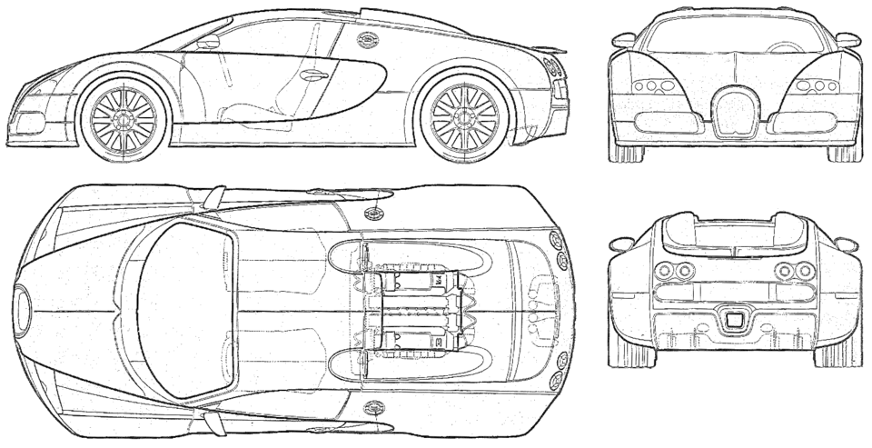
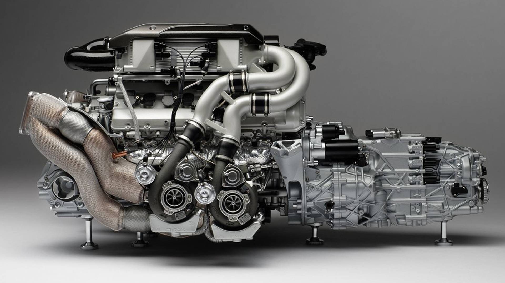
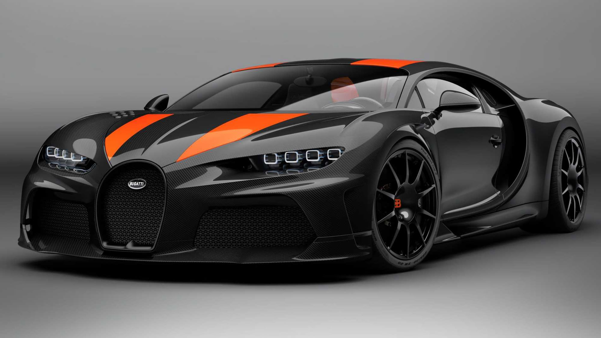

ARTICLE ABUOT BUGATTI CAR.
Article on Bugatti Design
The exterior of the Bugatti Super Sport model appears with an aggressive, aggressive design. This supercar has a black front grille, xenon longitudinal lights with LED daytime running lights, and air vents have been added under these lights to increase aerodynamics. The Bugatti Super Sport is distinguished from the sides by large air intakes, and the last doors contain the engine coolant. From the rear, the Super Sport is distinguished from its siblings by its streamlined engine cover, circular rear lights, and a large and hidden air wing that appears when pressing the brakes at high speeds to maintain its balance, in addition to the dual sports exhaust outlets chrome-plated in the middle of the large bumper. The interior of the Bugatti Veyron Super Sport is distinguished from its siblings by having a more sporty and elegant spirit, It enjoys an elegant leather steering wheel, sports gauges with clear vision surrounded by chrome, in addition to leather seats decorated with colorful stitching.
Bugatti car engine
The Bugatti Veyron car engine consists of 16 cylinders in the form of (W) with 64 valves, its capacity is 7993 cubic centimeters, and its power is 1001 horses at 6000 rpm, and the engine is linked to a seven-speed transmission, and the maximum speed of the car is 408 kilometers per hour.
Bugatti car features
Bugatti is 4.34m long, 1.95m wide and 1.2m high. The car's engine has a capacity of 7.9 liters, and it consists of 16 cylinders with a power of 1001 horsepower. It has a seven-speed automatic transmission. The car has a top speed of 408 km/h. Its mass is 1888 kilograms. Its average fuel consumption is 40 liters of petrol per hundred kilometers traveled. The fuel tank holds a hundred liters of petrol. It consumes its fuel in less than 13 minutes. It has the feature of electronic stability. It has a gear control feature. It has a non-slip safety system.
